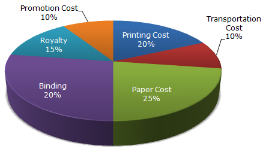
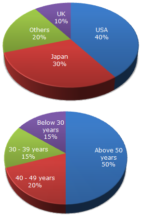
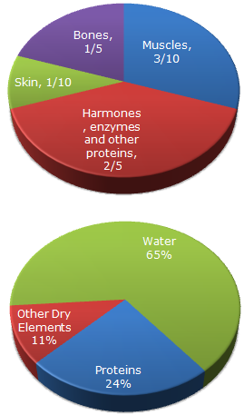

Various Expenditures (in percentage) Incurred in Publishing a Book
The following pie-chart shows the percentage distribution of the expenditure incurred in publishing a book. Study the pie-chart and answer the questions based on it.
Subquestions:
a. If for a certain quantity of books, the publisher has to pay Rs. 30,600 as printing cost, then what will be amount of royalty to be paid for these books?
Rs. 19,450Rs. 21,200
Rs. 22,950
Rs. 26,150
b. What is the central angle of the sector corresponding to the expenditure incurred on Royalty?
15°24°
54°
48°
c. The price of the book is marked 20% above the C.P. If the marked price of the book is Rs. 180, then what is the cost of the paper used in a single copy of the book?
Rs. 36Rs. 37.50
Rs. 42
Rs. 44.25
d. If 5500 copies are published and the transportation cost on them amounts to Rs. 82500, then what should be the selling price of the book so that the publisher can earn a profit of 25%?
Rs. 187.50Rs. 191.50
Rs. 175
Rs. 180
e. Royalty on the book is less than the printing cost by:
5%33 1/3%
20%
25%
Distribution of Overseas Tourist Traffic from India
The following pie charts exhibit the distribution of the overseas tourist traffic from India. The two charts shows the tourist distribution by country and the age profiles of the tourists respectively.
Subquestions:
a. What percentage of Indian tourists went to either USA or UK?
40%50%
60%
70%
b. The ratio of the number of Indian tourists that went to USA to the number of Indian tourists who were below 30 years of age is?
2:18:3
3:8
Cannot be determined
c. If amongst other countries, Switzerland accounted for 25% of the Indian tourist traffic, and it is known from official Swiss records that a total of 25 lakh Indian tourists had gone to Switzerland during the year, then find the number of 30-39 year old Indian tourists who went abroad in that year?
18.75 lakh25 lakh
50 lakh
75 lakh
Distribution of Weight in Human Body
The following pie chart give the information about the distribution of weight in the human body according to different kinds of components.
Subquestions:
a. What percentage of proteins of the human body is equivalent to the weight of its skin?
41.66%43.33%
44.44%
Cannot be determined
b. How much of the human body is neither made of bones or skin?
40%50%
60%
70%
c. What is the ratio of the distribution of proteins in the muscles to that of the distribution of proteins in the bones?
2:12:3
3:2
Cannot be determined
New York Market Share by Value of Different Computer Companies in 2005
The pie chart shows the distribution of New York market share by value of different computer companies in 2005.

Subquestions:
a. For the year 2005, which company has realized the lowest average unit sales price for a PC?
CommodoreIBM
Tandy
Cannot be determined
b. Over the period 2005-2006, if sales (value-wise) of IBM PC's increased by 50% and of Apple by 15% assuming that PC sales of all other computer companies remained the same, by what percentage (approximately) would the PC sales in New York (value-wise) increase over the same period?
16.1%18%
14%
None of these
c. In 2005, the average unit sale price of an IBM PC was approximately (in US$)
31802800
393
3080